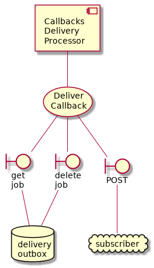

Event Subsystem¶
The event subsystem provides a mechanism that allows 3rd parties to remain well informed about the state of the system without having to poll it.
It is entirely optional, the system should work in a “fire and forget” manner. This means that the B2G interactions do not require further action on behalf of the Business. However, because the system operates with eventual consistency and best effort semantics (i.e. not guaranteed delivery semantics) the event subststem may help applications orchestrate their distributed processes.
Subscriptions API¶
This is basically an implementation of WebSub https://en.wikipedia.org/wiki/WebSub. It allows Message API clients to discover (be notified of) message changes without polling.
The implementation is /intergov/apis/subscriptions_api
The business logic is in these classes:
SubscriptionDeregistrationUseCase (in /intergov/use_cases/subscription_deregister.py)
SubscriptionRegisterUseCase (in /intergov/use_cases/subscription_register.py)
![@startuml
component subscriptions_api
usecase subscription_register [
Register
Subscription
]
usecase subscription_deregister [
De-Register
Subscription
]
database subscriptions [
Subscriptions
]
boundary post [
post
subscription
]
boundary delete [
delete
subscription
]
subscriptions_api -- subscription_deregister
subscriptions_api -- subscription_register
subscription_register -- post
subscription_deregister -- delete
post -- subscriptions
delete -- subscriptions
@enduml](_images/plantuml-dcde1c05d343d3806654f2f74078a3e0224ca89b.png)
Callbacks Spreader¶
This is part of the WebSub infrastructure that processes each event once.
-
class
intergov.processors.callbacks_spreader.CallbacksSpreaderProcessor(notifications_repo_conf=None, delivery_outbox_repo_conf=None, subscriptions_repo_conf=None)[source]¶ Convert each incoming message to set of messages containing (websub_url, message) so they may be sent and fail separately
![component callback_spreader [
Callbacks
Spreader
]
usecase uc_dispatch [
Dispatch Message
To Subscriber
]
callback_spreader -- uc_dispatch
database delivery_outbox [
delivery
outbox
]
boundary post_job [
post
job
]
uc_dispatch -- post_job
post_job -- delivery_outbox
database notifications [
notifications
]
boundary get_event [
get
event
]
uc_dispatch -- get_event
get_event -- notifications
boundary delete_event [
delete
event
]
uc_dispatch -- delete_event
delete_event -- notifications
database subscriptions [
subscriptions
]
boundary search_subscriptions [
search
subscriptions
]
uc_dispatch -- search_subscriptions
search_subscriptions -- subscriptions](_images/plantuml-f2447fce457d4a747a341eb5e9ab200bf74a0f04.png)
-
class
intergov.use_cases.dispatch_message_to_subscribers.DispatchMessageToSubscribersUseCase(notifications_repo, delivery_outbox_repo, subscriptions_repo)[source]¶ Used by the callbacks spreader worker.
This is the “fan-out” part of the WebSub, where each event dispatched to all the relevant subscribers. For each event (notification), it looks-up the relevant subscribers and dispatches a callback task so that they will be notified.
There is a downstream delivery processor that actually makes the callback, it is insulated from this process by the delivery outbox message queue.
Note: In this application the subscription signature is based on the message predicate.
Callback Deliver¶
This is the part of the WebSub infrastructure that processes each message once for every relevant subscriber. It deffers to an external message queue to implement best-effort delivery semantics.
-
class
intergov.processors.callback_deliver.CallbacksDeliveryProcessor(delivery_outbox_repo_conf=None)[source]¶ Iterate over the DeliverCallbackUseCase.

-
class
intergov.use_cases.deliver_callback.DeliverCallbackUseCase(delivery_outbox_repo)[source]¶ Is used by a callback deliverer worker
- Reads queue delivery_outbox_repo consisting of tasks in format:
(url, message)
Then such message should be either sent to this URL and the task is deleted or, in case of any error, not to be deleted and to be tried again (up to MAX_RETRIES times)
TODO: rate limits, no more than 100 messages to a single url per 10 seconds?